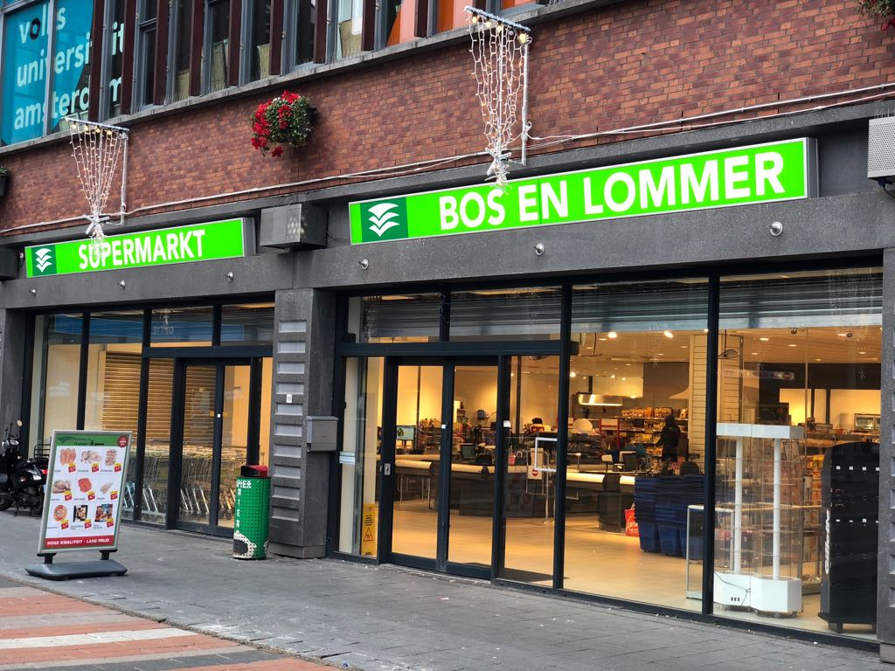

Bezienswaardigheden

Zon (indien beschikbaar), sculpturen en open meren, gezinnen, kinderen en huisdieren: het uitgestrekte Rembrandt Park is een van de beste buitenplekken in de stad.
Het is soms stil, soms luid, maar altijd mooi om door te lopen en perfect om te ontspannen.
Het park heeft ook tal van voorzieningen, waaronder oefenruimtes en een zeer populaire kinderboerderij.
U kunt ook naar Erasmus Park gaan om door de uitgestrekte bloementuinen te wandelen en te ontspannen met een kopje koffie in café Terrasmus.